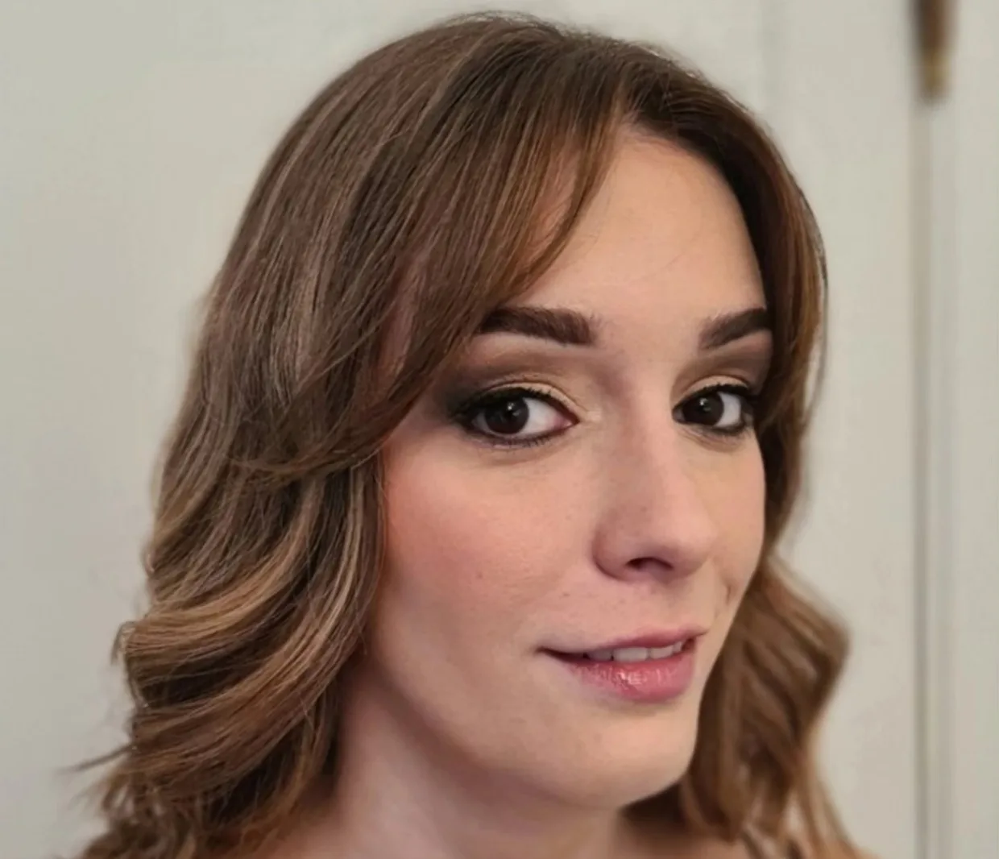
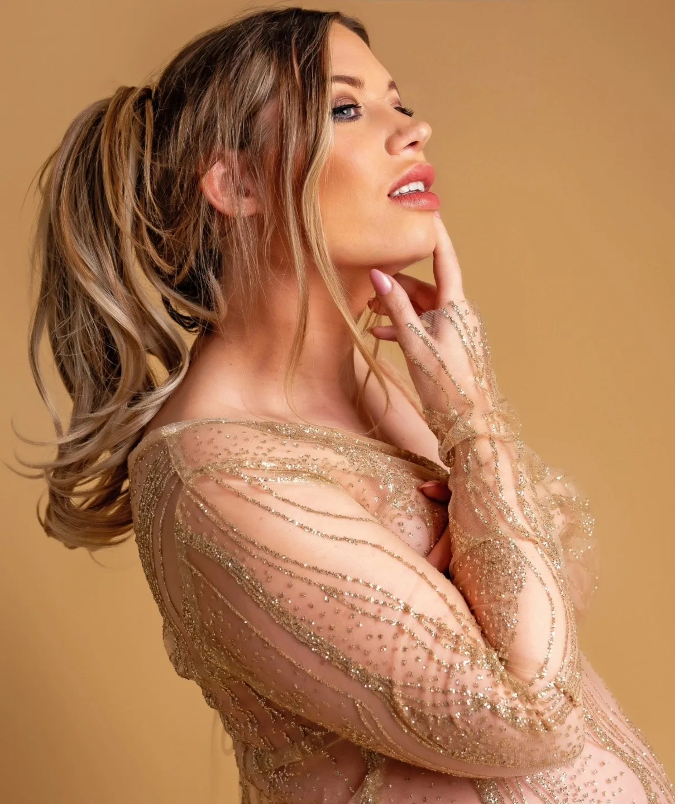
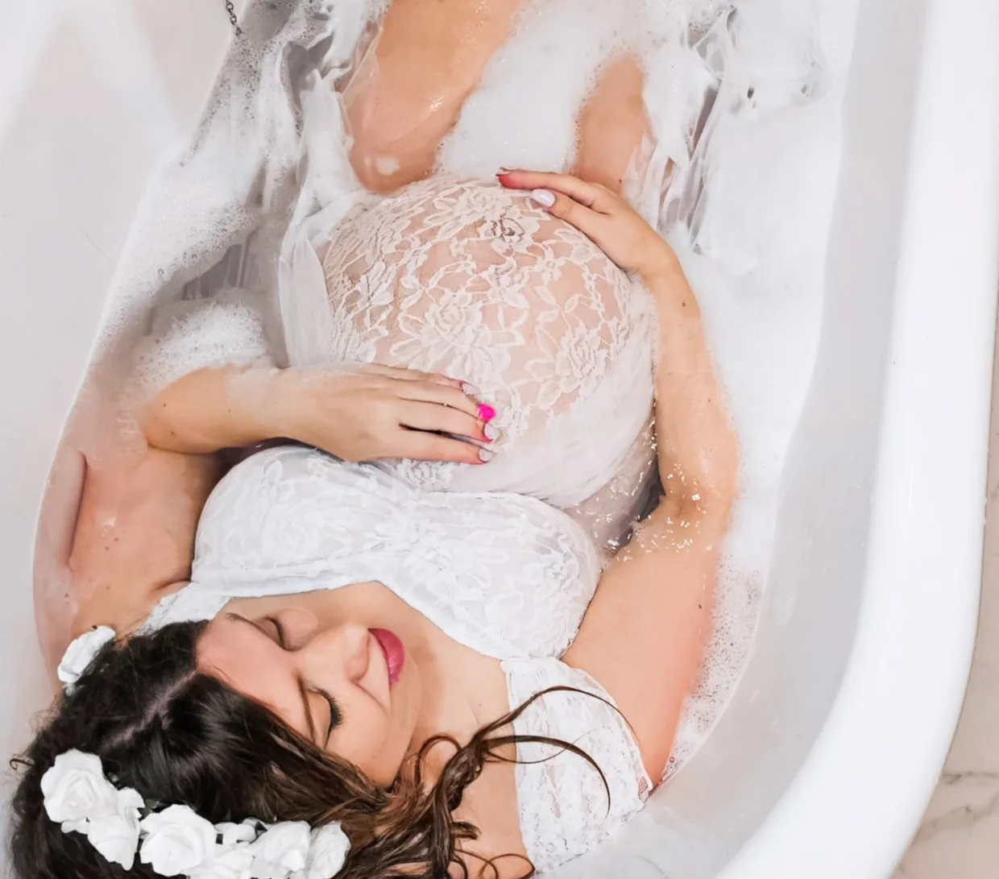
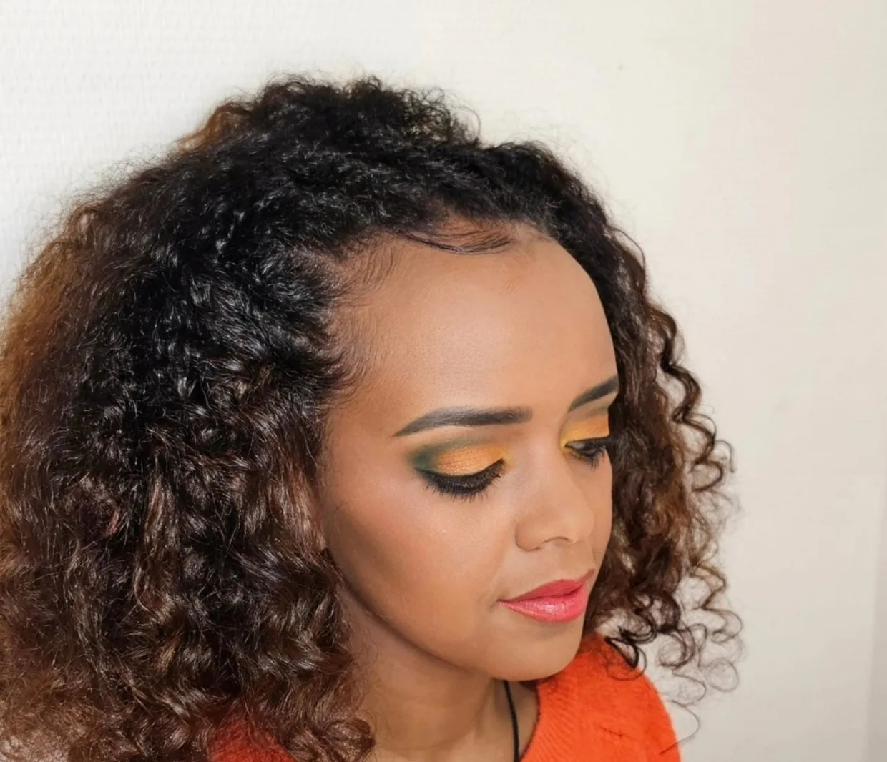
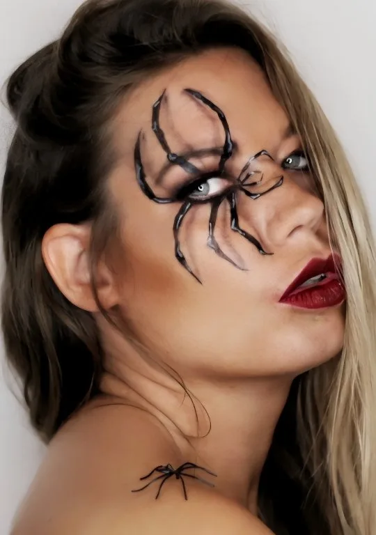

Natural bridal
Ontworpen om je natuurlijke schoonheid te versterken.
- Proefmoment in de studio, 1 tot 2 uur
- Advies voor de verzorging van je huid
- Make-up op je trouwdag, op locatie
Ik ben Lieze Messiaen, make-up artist, hairstylist en docente. Al meer dan vijftien jaar maak ik bruiden, mama's in spe en acteurs klaar voor hun grote moment. Jij zegt wat je mooi vindt, ik voeg er mijn touch aan toe.


Mijn reis begon met Kunstwetenschappen aan de Universiteit Gent, maar mijn passie voor schoonheid won het. Met een diploma Allround Make-up Artist werk ik van naturelle bruidslooks tot special effects en hairstyling. Voor bijscholingen reisde ik al naar Frankrijk, Engeland en Los Angeles.
Elk arrangement start met een proefmoment in de studio in Marke. Op je trouwdag kom ik naar de locatie die jij kiest, zodat jij gewoon kan genieten.
 Natural bridal
Natural bridalOntworpen om je natuurlijke schoonheid te versterken.
Met browstyling, highlight en shaping op maat van je gezicht.
Jij bepaalt wat je mooi vindt, samen maken we je droomkapsel.
Alles in één: je volledige look voor de grote dag.



Plan je een zwangerschapsshoot? Dan maak ik je klaar met een naturelle of glam make-up, en desgewenst ook je haar. In de studio of op locatie, alles is bespreekbaar.
Make-up en hairstyling voor je fotoshoot, naturel of glam, in de studio of op locatie.
Je buik als kunstwerk, met veilige en huidvriendelijke producten. Inclusief een mini-shoot met enkele digitale foto's.
Fotoshoots, catwalks, videoclips en film. Een greep uit de looks die ik de voorbije jaren mocht maken.




35 reviews op Google, van bruiden en vaste klanten.
"Als bruid in spe voelde ik me meteen op mijn gemak bij Lieze. Ze vroeg en volgde mijn wensen voor haar en make-up en voegde er haar eigen touch aan toe met een prachtig resultaat! Vroeg in de ochtend van ons huwelijk stond ze bij ons aan de deur."
"Lieze luisterde super goed naar mijn wensen. Ze deed mijn make-up en haar voor mijn huwelijk. Het bleef de hele dag heel mooi zitten en ik voelde me een prinses."
"Lieze verzorgde al enkele keren mijn haar en make-up. Ze komt haar afspraken na. Ze houdt rekening met de wensen en geeft professioneel advies omtrent passende make-up en kapsel."
Ik werk uitsluitend op afspraak. Stuur me een mailtje of een bericht op Instagram met je datum, de locatie en wat je in gedachten hebt.
Ik maakte deze demo voor jullie om te tonen wat er kan. Na een kort gesprek maak ik er iets veel persoonlijkers van, helemaal naar jullie wens.
Vrijblijvend. Ik kom langs of we bellen.
Op maat, op jullie eigen domein.
Geen voorschot. Jullie betalen pas als alles klaar is.
Hosting, domeinnaam en kleine wijzigingen, zoals nieuwe openingsuren.
Omdat een voorbeeld meer zegt dan een mail. Zo zien jullie meteen wat er kan, en het kost jullie niets.
Nee. Het gesprek is vrijblijvend. Vinden jullie het niks, dan is het daarmee gedaan.
Na ons gesprek staat jullie site binnen 10 tot 14 dagen online.
Zeker. Jullie domeinnaam kan gewoon blijven, de nieuwe site komt in de plaats van de oude.
Nee, dat doe ik op basis van ons gesprek. Eigen foto's zijn mooi meegenomen, maar niet nodig om te starten.